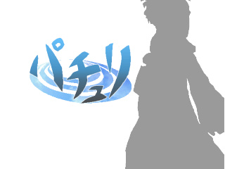

パチュリ
"PATCHOULI" a little war in bland-old library

このたびは「パチュリ "PATCHOULI" a little war in bland-old library」をダウンロードしていただきありがとうございます。
当ゲームは上海アリス幻樂団の「東方プロジェクト」および橙汁の「スグリ」の二次創作です。
当然ながら、公式のものではありません。
本ソフトに対するいかなる質問も上海アリス幻樂団や橙汁に行わないで下さい。
動作環境
ＯＳ
Windows 98/SE/ME/2000/XP（たぶん）
DirectX 8.0 以上必須
ＣＰＵ
Pentium 以降
ビデオカード
Direct3D 対応の高速なビデオカード
・NVIDIA GeForce シリーズ
・ATI RADEON シリーズ
等なら動くはず。
その他
パッドコントローラ推奨（キーボードでも動きます）
バグ報告や感想などは
akatuki_twilight@yahoo.co.jp
や
掲示板
に書いてくれると喜びます。
１．とっぷ
２．ぷれすとり
３．きゃらくたー
４．操作方法
５．しすてむ
６．あくせる
７．たいとる画面
８．画面説明
９．こんふぃぐ
１０．ＦＡＱ
掲示板へ
プログラム本体、イメージデータ、マニュアル等の著作権は製作者ＫｖＬＷにあります。